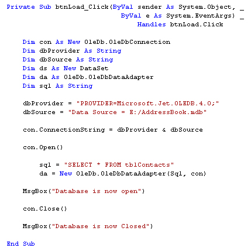

Data Sets and Data Adapters
Part of an ongoing tutorial. The first part of Databases and VB .NET can be found here:
Coding your own VB .NET database projects
In the previous part, you learned how to set up a Connection Object. This was so that you could open a connection to the database itself. But that's not the end of it. The data from the database needs to be stored somewhere, so that we can manipulate it.
ADO.NET uses something called a DataSet to hold all of your information from the database (you can also use a DataTable, if all you want to do is read information, and not have people write to your database.). But the DataSet (and Data Table) will hold a copy of the information from the database.
The DataSet is not something you can draw on your form, like a Button or a Textbox. The DataSet is something that is hidden from you, and just stored in memory. Imagine a grid with rows and columns. Each imaginary row of the DataSet represents a Row of information in your Access database. And each imaginary column represents a Column of information in your Access database (called a Field in Access).
This, then, is a DataSet. But what's a Data Adapter?
The Connection Object and the DataSet can't see each other. They need a go-between so that they can communicate. This go-between is called a Data Adapter. The Data Adapter contacts your Connection Object, and then executes a query that you set up. The results of that query are then stored in the DataSet.
The Data Adapter and DataSet are objects. You set them up like this:
Dim ds As New DataSet
Dim da As OleDb.OleDbDataAdapter
da = New OleDb.OleDbDataAdapter( sql, con )
The code needs a little explaining, though. First, the Data Adapter.
The Data Adapter
The Data Adapter is a property of the OLEDB object, hence the full stop between the two:
OleDb.OleDbDataAdapter
We're passing this object to the variable called da. This variable will then hold a reference to the Data Adapter.
While the second line in the code above sets up a reference to the Data Adapter, the third line creates a new Data Adapter object. You need to put two things in the round brackets of the Object declaration: Your SQL string (which we'll get to shortly), and your connection object. Our Connection Object is stored in the variable which we've called con. (Like all variable you can call it practically anything you like. We've gone for something short and memorable.) You then pass the New Data Adapter to your variable (da for us):
da = New OleDb.OleDbDataAdapter(sql, con )
We need something else, though. The sql in between the round brackets is the name of a variable. We haven't yet set this up. We'll have a look at SQL in a moment. But bear in mind what the Data Adaptor is doing: Acting as a go-between for the Connection Object and the Data Set
No more reading these lessons online - get the eBook here!
Structured Query Language
SQL (pronounced SeeKwel), is short for Structured Query Language, and is a way to query and write to databases (not just Access). The basics are quite easy to learn. If you want to grab all of the records from a table in a database, you use the SELECT word. Like this:
SELECT * FROM Table_Name
SQL is not case sensitive, so the above line could be written:
Select * from Table_Name
But your SQL statements are easier to read if you type the keywords in uppercase letters. The keywords in the lines above are SELECT and FROM. The asterisk means "All Records". Table_Name is the name of a table in your database. So the whole line reads:
"SELECT all the records FROM the table called Table_Name"
You don't need to select all (*) the records from your database. You can just select the columns that you need. The name of the table in our database is tblContacts. If we wanted to select just the first name and surname columns from this table, we can specify that in our SQL String:
SELECT tblContacts.FirstName, tblContacts.Surname FROM tblContacts
When this SQL statement is executed, only the FirstName and Surname columns from the database will be returned.
There are a lot more SQL commands, but for our purposes this is enough.
Because we want to SELECT all (*) the records from the table called tblContacts, we pass this string to the string variable we have called sql:
sql = "SELECT * FROM tblContacts"
Your code window should now look like this (though the file path to your database might be different):

Now that the Data Adapter has selected all of the records from the table in our database, we need somewhere to put those records - in the DataSet.
Filling the DataSet
The Data Adapter can Fill a DataSet with records from a Table. You only need a single line of code to do this:
da.Fill(ds, "AddressBook")
As soon as you type the name of your Data Adapter (da for us), you'll get a pop up box of properties and methods. Select Fill from the list, then type a pair of round brackets. In between the round brackets, you need two things: the Name of your DataSet (ds, in our case), and an identifying name. This identifying name can be anything you like. But it is just used to identify this particular Data Adapter Fill. We could have called it "Bacon Sandwich", if we wanted:
da.Fill(ds, "Bacon Sandwich ")
The code above still works. But it's better to stick to something a little more descriptive than "Bacon Sandwich"!
Add the new line after the creation of the Data Adaptor:
da = New OleDb.OleDbDataAdapter(sql, con)
da.Fill(ds, "AddressBook")
And that's it. The DataSet (ds) will now be filled with the records we selected from the table called tblContact. There's only one slight problem - nobody can see the data yet! We'll tackle that in the next part.